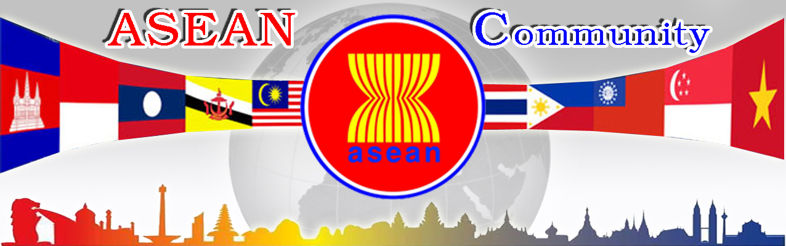

ພາສາອາຊຽນ

ພາສາທາງການຂອງບັນດາປະເທດສະມາຊິກຂອງອາຊຽນດັ່ງນີ້:
ປະເທດອິນໂດເນເຊຍ ພາສາທາງການແມ່ນ ບາຫາຊາ ອິນໂດເນເຊຍ (Bahasa Indonesia).
ປະເທດມາເລເຊຍ ພາສາທາງການແມ່ນມາເລ ຫຼື ພາສາມາລາຢູ (Bahasa Melayu).
ປະເທດຟິລິປິນ ພາສາທາງການແມ່ນ (Filipino, ຟິລິປິໂນ ຫຼື ພາສາຕາກາລ໊ອກ).
ປະເທດສິງກະໂປ ພາສາທາງກາງການແມ່ນອັງກິດ (English).
ປະເທດບຮູໄນພາສາທາງການແມ່ນພາສາມາເລ (Bahasa Melayu).
ຫວຽດນາມ ພາສາທາງການແມ່ນຫວຽດນາມ (Vietnamese).
ປະເທດລາວ ພາສາທາງການແມ່ນລາວ (Laotian).
ປະເທດ ມຽນມາ ພາສາທາງການແມ່ນມຽນມາ (Burmese).
ປະເທດກໍາປູເຈຍ ພາສາທາງການແມ່ນ ຂະເມັນ (Khmer).
ປະເທດໄທ ພາສາທາງການແມ່ນ ພາສາໄທ (Thai).
ຂອບໃຈຂໍ້ມູນຈາກ website:http://www.เกร็ดความรู้.net